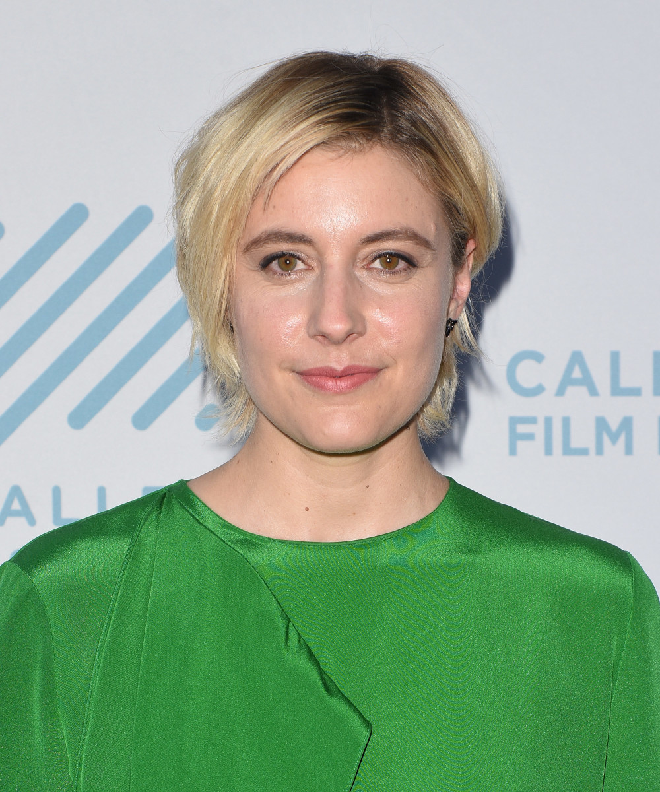
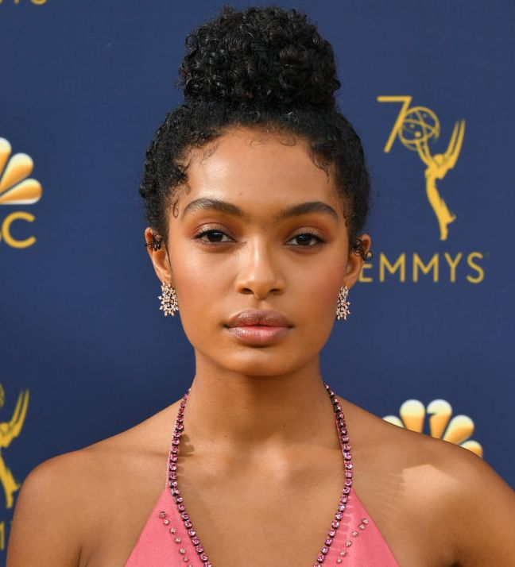
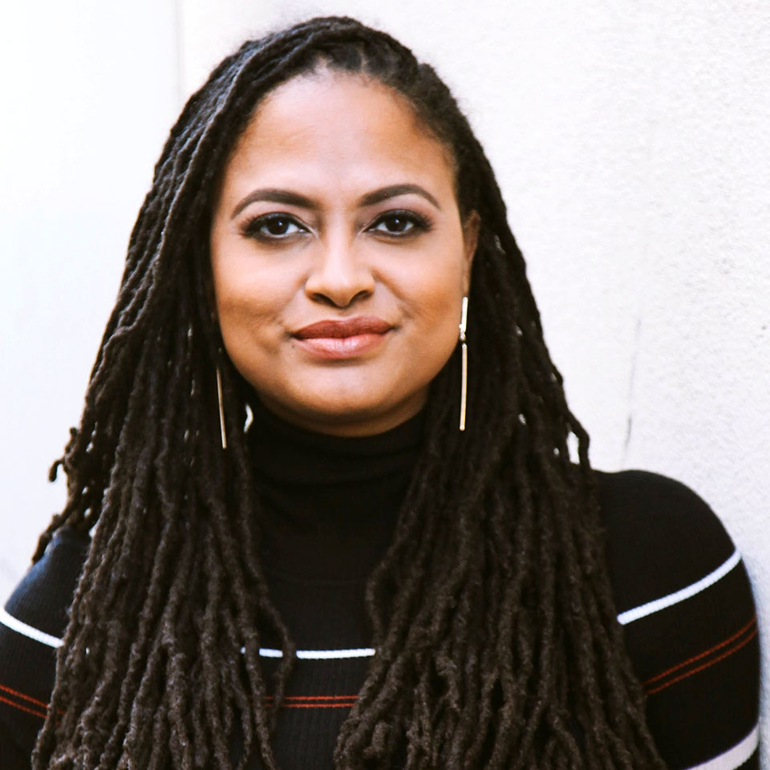
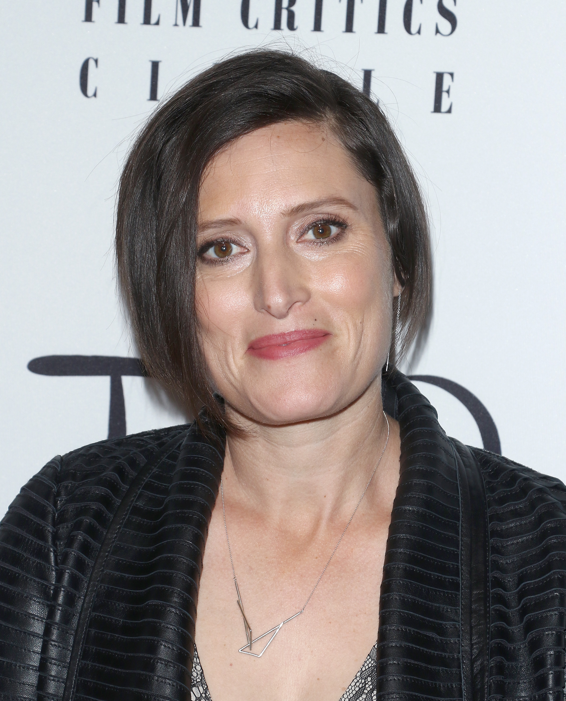
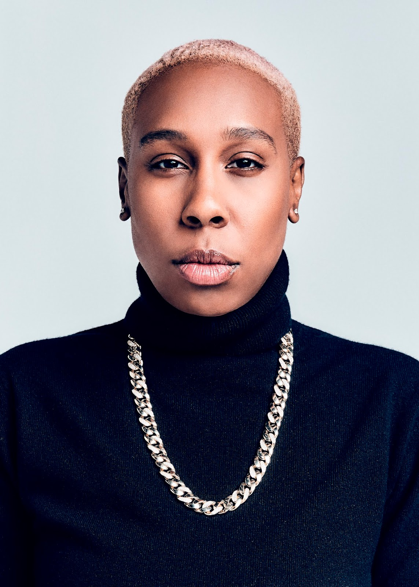
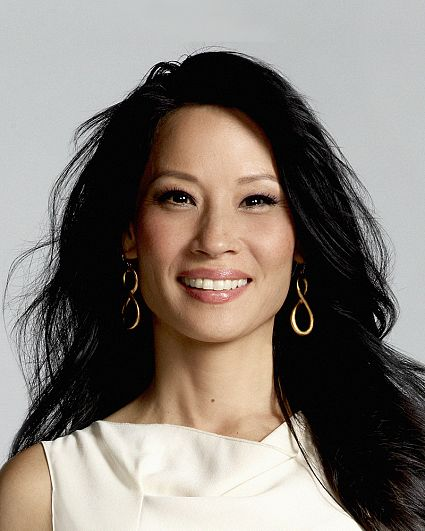
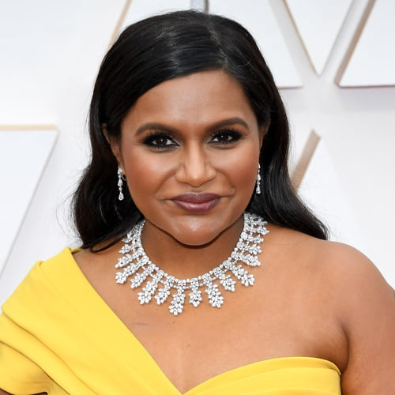

In 2017, Gerwig wrote and directed the highly acclaimed coming-of-age move 'Lady Bird.' The film won the Golden Globe for Best Motion Picture. Gerwig also directed the film adaptation of 'Little Women' in 2019. Both films were huge successes and gave her credibility as an incredible director. Audiences were shocked when Gerwig wasn't nominated for Best Director this year. The Academy failed to nominate a single woman in the Best Director category. Her name trended on social media after the nominations were announced.
Greta Gerwig / Director
Shahidi is a 20-year-old actress and social activist. Shahidi stars in hit tv-shows 'Black-ish' and 'Grown-ish.' She played the main role in the film adaptation of 'The Sun is Also a Star' in 2019. In addition to being an actress, Shahidi is also a student and was accepted into Harvard after high school. She is passionate about uplifting young girls and promoting STEM.
Yara Shahidi / Actress
DuVernay has served every role imaginable behind the camera. She is a director, producer, screenwriter, film marketer and film distributor. She was the first African American woman to win the U.S. Directing Award for a Drama Film at the 2012 Sundance Film Festival. She was the first black female to be nominated for a Golden Globe and an Oscar, for her work on the film 'Selma'. In 2018, DuVernay directed the film adaptation of 'A Wrinkle in Time.' The film budget exceeded $100 million, making DuVernay the first black woman to direct a live-action film with a budget of that size.
Ava DuVernay / Producer and Director
Morrison is best known for being the first woman to be nominated for an Oscar for best cinematography. She was nominated for her work on the 2017 film 'Mudbound.' She is also known for her cinematography on the Marvel hit 'Black Panther.' Cinematography is a historically male-dominated profession. She hopes to encourage more women to become cinematographers.
Rachel Morrison / Cinematographer
In 2006 Waithe earned a degree in Cinema and Television Arts. She began working as a crew member on numerous tv shows. She has since expanded her career to acting, writing, and producing. In 2017, Waithe became the first LGBTQ African-American woman to win the Emmy for Outstanding Writing for a Comedy Series. She won for her work on the Netflix Show, 'Master of None.' She is now serving as the creator and producer for Hulu's show 'The Chi.' The series provides a humanized look into the average lives of Chicagoans.
Lena Waithe / Screenwriter
Liu has a long-list of accoladed in Hollywood. She starred in the show 'Elementary' for 7 seasons. Liu also played Alex Munday in the 2000 version of 'Charlie's Angels.' She is also a vocal activist in Hollywood. In 2004 Liu was appointed an ambassador for the U.S. Fund for UNICEF. She is passionate about raising awareness for human trafficking.
Lucy Liu / Actress and Director
Kaling rose to stardom with her work on 'The Office.' Not only did she act in the show but she was also a writer. She was one of the nine Office creatives behind the first season. She has also worked as a writer on 'Saturday Night Live.' Kaling was cast in 'A Wrinkle in Time,' her first major blockbuster. She has also starred in the films Ocean's 8 and Late Night. Kaling is now working for Warner Bro. Television Group to develope and write future television projects.
Mindy Kaling / Actress and Writer